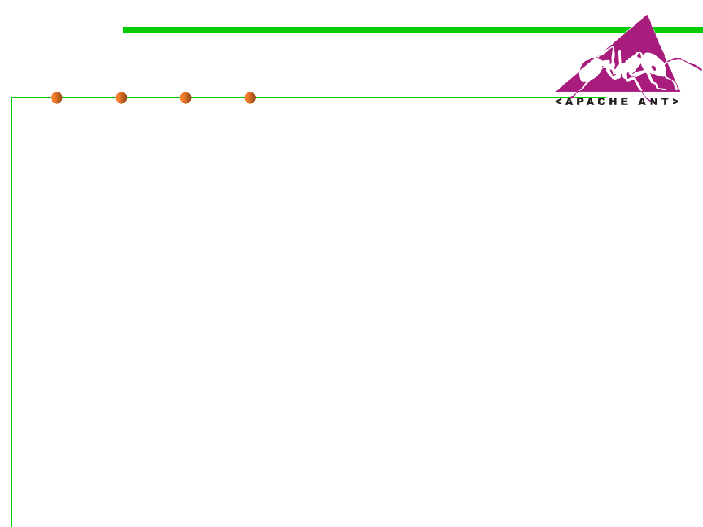

Apache Ant
2.2 Process, Systems, and Tools of Software Construction
▪ Ant is a build tool developed by Apache Software Foundation.
▪ Ant follows is to encapsulate each activity in the build system into
a high-level task. Ant遵循的是将构建系统中的每个活动都封装成一
个高级任务。
– ant compile: For compiling all the Java source files into class files
– ant jar: For packaging the class files into a single Jar file
– ant package: For creating a full software release package, complete with a
version number
– ant clean: For removing all generated files from the build tree
– ant javadoc: For generating API documentation using the Javadoc tool
– ant: For executing the default target, which is most likely the same as the
package target
▪ Buildfile: build.xml